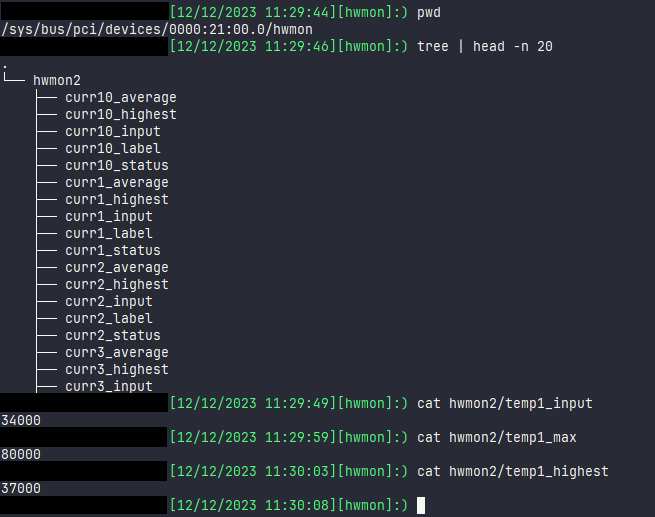

Card Detection, Selection, and General Overview¶
Initialization flow¶
The diagram below shows a simplified example of the AMI driver initialization flow and what happens when two user applications attempt to access a shared resource (sensor data in this case).
{kind=link}
Device enablement¶
The first steps of the main PCI device detection flow are to “check if the device is supported” and to “enable the PCI device”. As per the standard Linux practice, the AMI driver maintains a table of supported PCI devices; the driver probe function will only be called if the inserted device matches one of the IDs in this table. By default, AMI accepts any Xilinx device, however, additional ID checks are performed within the probe function against a list of hard-coded supported device IDs. If the device ID is supported, the driver enables the device with the Linux PCI core - this enables bus mastering for the device. If new PCI devices must be supported, their ID should be added to the AMI driver list of supported devices.
Card selection¶
To allow user applications to interact with the AMI driver, there needs to be a way for the user to select which device to interact with. The AMI driver creates a character device file for each supported device to facilitate this:
The driver creates a character device for every compatible PCI device (/dev/ami1, /dev/ami2, etc…).
There is a global character device file /dev/ami0 which does not belong to any device (this is currently unused).
The user can view all devices present by looking at /dev.
{kind=link}
The user can view all BDF → device number mappings by reading /sys/bus/pci/drivers/ami/devices file. For example, with two V80 devices in the system, the map may look like:
2
c1:00.0 1 2
21:00.0 2 3
The number on the first line indicates how many devices are currently attached to the driver. The rest of the lines can be broken down into the following components:
<BDF> <cdev> <hwmon>
where <BDF> is the device BDF, <cdev> is the character device number (/dev/amiX) and <hwmon> is the number of the hwmon directory belonging to the device (/sys/class/hwmon/hwmonX). For a more detailed explanation of how each of these components are used, see User Interface.
The following diagram shows a simplified initialization flow and shows how the user can interact with the underlying driver to access their desired device (in this example, the devices have two supported PF’s).
{kind=link}
Using HWMON for sensor readings¶
Sensors are exposed via sysfs (or more specifically, hwmon). This exposes all sensor information in plaintext format as sysfs nodes that can be viewed either from the command line or from code with simple system calls. This approach has several advantages:
Avoids unnecessary IOCTL system calls.
Mitigates race conditions.
Easily viewable from a terminal.
Compatible with third-party tools (see lm-sensors/lm-sensors: lm-sensors repository (github.com)).
The hwmon interface provides a simple kernel API that essentially boils down to read/write callback functions. The driver is free to return whatever data is necessary, however, there is a restriction on the data format in that it should be simple, fixed point values only where possible.
See The Linux Hardware Monitoring kernel API — The Linux Kernel documentation for more detailed information.
See the following diagram.
{kind=link}
The following image shows how hwmon works in practice on the command line.
Note that using the hwmon interface to read sensor information bypasses the shared resource lock that is imposed upon IOCTL calls.

A note on sysfs and ioctl¶
While ioctl provides a generic and abstract driver interface, it is often poorly documented and as a result its use can exhibit unexpected behavior. In contrast to this, sysfs provides a way for device drivers to expose plain-text, human-readable attributes, and configuration options to the user. These can be read and written to like normal files.
Using sysfs is the preferred approach and is adopted in the AMI architecture and design.
Use of ioctl within AMI is restricted to ‘edge cases’ and is used by exception, for example, in dealing with binary data.
Page Revision: v. 31